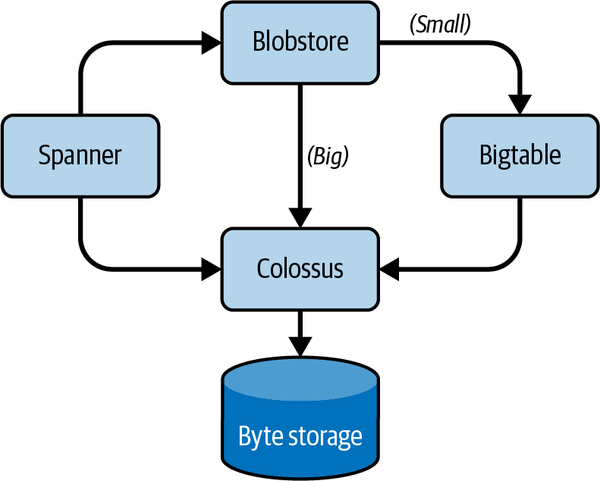

When the first edition of this book was published in 2016, production infrastructure at Google differed significantly from that of other businesses. We provided an examination of production at Google and discussed trends appearing in the industry at large. Since then, concepts like pervasive containerization, user-centric observability, and universal production platforms have led to widespread fundamental changes in the table stakes for running modern software at scale.
The timing of Google’s founding and its subsequent growth rate may have led the company to be a first mover in developing many technologies and patterns that have since become widely adopted, or at least accepted as useful methods. However, much of this sea change should be credited to the efforts of myriad engineers across industries and the globe. It’s worth recognizing that evolution, both as a checkpoint in how far we’ve come and as a bellwether of where we’re headed.
Cloud computing is here to stay; that much is certain. For organizations that have made the shift, cloud computing has eliminated traditional headaches like server procurement lead times, locally available energy, and the zero-sum negotiations for limited hardware resources. However, this transition from physical to logical constraints is not a panacea. Instead, it introduces new operational challenges, including the translation of capacity planning into financial engineering, the upward shift of abstraction boundaries via managed services, and the necessity of shared state.
While the elasticity of the public cloud has enabled organizations to scale at a velocity that was previously infeasible, successfully navigating this paradigm shift requires more than just moving workloads; it requires adapting the core SRE toolkit to a world of variable costs and externalized control planes. Although Google predates cloud computing as we know it today, the organization has arguably had a cloud computing mindset from the beginning.
The challenges of managing large, distributed systems are common across industries and verticals, even as the failure modes have changed—shifting from localized hardware faults to complex, emergent failures in shared state and global control planes. Despite this, the core SRE mission of ensuring reliable, scalable systems remains the same.
The nature of capacity planning has evolved from a hardware procurement waterfall into a continuous exercise in financial engineering. Long-term planning is no longer about physical arrival dates but about judicious spending—ensuring just-in-time (JIT) elasticity for known spikes (such as Black Friday/Cyber Monday) rather than carrying idle capital expenditure (CapEx) for the remaining 51 weeks of the year.
Without careful management, organizations often find they have merely traded predictable CapEx for highly volatile operating expenditure (OpEx). This has given rise to FinOps,1 a discipline that applies SRE concepts—such as automation and customer-centric monitoring—to the intersection of reliability, capacity, and cost. Within this framework, SREs manage capacity through explicit cost versus availability trade-offs, balancing the stability of long-term commitments against the high-discount but inherently ephemeral nature of spot instances.
The proliferation of managed services—including but not limited to infrastructure as a service (IaaS), platform as a service (PaaS), function as a service (FaaS), and database as a service (DBaaS) offerings—has shifted the boundary of abstraction upward. SREs can now delegate the operational lifecycle of infrastructure primitives such as disk firmware, hypervisor patching, or base database engines to their cloud provider. This allows teams to refocus their engineering effort on higher-order reliability concerns, architectural robustness, and complex failure modes that are unique to their business logic.
This acceleration is bolstered by open standards like Kubernetes and OpenTelemetry, which have brought the industry closer to the “write once, run anywhere” dream. By adhering to these standards, SREs can mitigate some of the risks of vendor lock-in, maintaining the flexibility to move workloads across providers and products as cost or reliability requirements shift.
A decade ago, production was a “virtual machine–first” world. While the industry was beginning to consider containers, the primary unit of compute remained the virtual machine (VM)—often managed as a pet-like entity with a long lifespan.2 Infrastructure was a rigid fortress. Provisioning was achieved through convoluted configuration management scripts that sought to bring order to a collection of discrete virtual boxes. Reliability was intrinsically tied to the health of these boxes and their connecting pipes—static firewalls and load balancers that required manual coordination.
Consider the typical enterprise deployment of 2016: an application lived on a specific set of VMs, with storage locally attached or mapped via a complex storage area network (SAN). These were proprietary, vendor-specific subsystems run by specialized roles with limited functional overlap and a tendency to lack holistic ownership of the entire production system. Issues with network, storage, or compute required dedicated attention from people with the requisite skills. If the underlying hardware failed, the proverbial fortress crumbled. The operations engineer’s primary battle was against configuration drift and the fragility of long-lived, stateful instances, with rather basic tools for understanding and troubleshooting failures in low-observability environments.
The last 10 years marked a fundamental transition from server-centric to workload-centric architectures. The rise of cloud computing enabled—or some may say necessitated—this transition. We moved away from the fortress model toward a more fluid, decomposed system, with the standard unit of production shifting from VMs toward containerized microservices and ephemeral functions. This was not just a change in packaging; it was a shift in the unit of reliability.
This decade saw three critical architectural decouplings:
Orchestrators moved the focus from “where the server is” to “what the workload needs.” Infrastructure became a (seemingly) elastic resource pool. For example, a modern streaming service no longer manages a video encoder server; it manages a pool of encoding tasks that burst across thousands of temporary containers that shrink or even disappear the moment the work is done or demand has declined, without manual intervention.
The tether between processing power and data persistence broke. Traditional monolithic databases are increasingly being replaced by distributed, globally consistent systems, with widespread adoption of architectures where data lives independently of the engines that query it. Modern data warehouses exemplify this: you can scale your compute to scan a petabyte of data in seconds, then shut it down completely while the data remains cost-effectively deposited in an underlying object storage layer. This decoupling removed the preallocation tax that plagued earlier production systems, where engineers had to actively plan storage sizes for certain applications and battle underutilization and out-of-space scenarios that could paralyze entire services.
Networking evolved from static IP-based routing to identity-driven and software-defined data planes. Advancements in kernel-level extensibility transformed the operating system from a black box into an instrumentable environment. High-scale platforms now use these advancements to perform sophisticated packet filtering and observability directly within the host’s privileged execution layer, allowing faster and more secure deployment cycles and avoiding the overhead of traditional networking stacks and dependency on vendor or OS-level patches while gaining centralized control. The network is no longer just “plumbing”; it is an active, observable, and policy-enforcing layer of the application itself.
As we look to the coming years, we anticipate a further decoupling of the application from its execution environment. The industry is moving toward universal runtimes—portable, sandboxed, and highly efficient code that can run across a continuum of execution environments, from massive datacenters to personal devices and low-resource edge hardware. This execution model relies on standardized interfaces for isolated compute with a minimal footprint, extending the principles and benefits of containers.
This technological shift is being shaped by two emerging constraints:
Workloads are increasingly subject to geopatriation—the dynamic partitioning of systems across regional zones to satisfy complex regulatory and residency requirements. For SRE, this means managing a fragmented global landscape where a single service might exist in 10 different jurisdictions, each with its own local compliance and residency requirements.
We’re seeing the start of a move toward resource-aware systems, and we expect future production systems to utilize reasoning control loops to interpret high-level intent. Instead of an SRE consciously tuning a scaling policy, the system will balance application performance against real-time variables like energy availability and other unit economics. A system might automatically migrate nonurgent background tasks to a datacenter with abundant resources, or throttle performance to stay within a specific financial budget.
For the next generation of SREs, the challenge will shift from resource allocation to policy governance. The role is no longer about keeping the fortress standing but about defining the high-level constraints that allow a self-optimizing, geodistributed system to maintain its own equilibrium.
Previously, the interface between development and production was largely defined by human-mediated gates. Production was a protected territory, accessed primarily through ticket-based requests and manual handovers. Platforms, where they existed, were often fragmented collections of bespoke scripts and static documentation. To an engineer in 2010, provisioning a service often meant entering a request into a service desk queue and waiting days—or weeks—for a specialized operations team to manually configure a virtual slice of hardware.
In that era, the platform was not a product developers could use to bring their features into production—that was a complex and lengthy process involving physical runbooks and serious operational friction. The operations-focused roles often functioned as a human bridge, manually compensating for the lack of standardized tooling to ensure that software survived the transition to production. This created a “wall of confusion” where developers understood the code and operators understood the environment, but neither had a unified view of the system’s health.
The subsequent decade saw the platform transform into a comprehensive system that could be used as a product that took inputs, such as (compiled) code and configuration instructions, and placed them into production environments. As systems grew in complexity, it became clear that “you build it, you run it” was unsustainable if every developer had to be an expert in the entire infrastructure stack. To combat this rising cognitive load, organizations moved toward internal developer platforms.
This shift represented a move toward the golden path—a standardized, automated workflow that abstracts away underlying complexity while providing built-in safety, inherent documentation, and robustness to unintentional errors like typos or misspellings. Instead of a ticket, the developer’s primary interface became a self-service portal or a set of unified APIs. Consider the mental picture of a vending machine: the developer selects a preconfigured template (an operating system, a web server, a runtime environment, an application framework, and a database), and the platform dispenses a production-ready instance that includes monitoring, security logging, and backup policies by default.
This era marked a shift in the unit of governance. We moved away from auditing individual human actions toward building systemic guardrails. Operational roles transformed into what we understand as the SRE role today and rescoped to platform architecture, focusing on embedding reliability and security directly into the shared substrate. By shifting left these operational concerns, platforms allowed developers to move faster without increasing the risk of a catastrophic failure. Reliability was no longer checked at the end of a release cycle; it became a baseline property of the platform itself.
As we look toward the immediate horizon—the next few years after the publication of this book—we observe early movements to evolve the platform from a collection of “vending machine” services into a more integrated coordination layer. The industry is beginning to experiment with intent-based patterns, where the emphasis shifts from selecting specific implementation details to declaring a desired state. In this model, rather than manually configuring individual scaling policies or database types, an engineer might define broader objectives, such as latency targets for a specific region or strict budgetary constraints. The platform then reconciles these goals with the available infrastructure via mechanisms like tier selection, resource isolation, or workload migration and performance throttling.
This transition is currently being shaped by three emerging areas of focus:
To combat the overwhelming noise of modern telemetry, there is an increasing effort to move away from static dashboards toward interfaces that prioritize information based on the current operational context, like context-aware debuggers and analysis tools. The goal is to surface only the most critical signals of a system’s state required for human decision making at any given moment, and thus further minimize time to diagnosis.
As the global landscape fragments, future platforms are expected to incorporate compliance and data residency rules directly into the deployment workflow. This treats legal and geographic constraints not as an afterthought but as a foundational part of the system’s intent.
We see an emerging trend where carbon intensity, energy costs, and availability are treated as primary engineering constraints. This suggests a future where platforms might assist in rebalancing workloads based on the availability of energy or shifting regional power costs.
This suggests that the SRE role may soon evolve from building golden paths to defining the constraints and objective functions that guide the platform’s decision making—in other words, toward high-level policy governance. In this view, success is less about the uptime of individual components and more about the platform’s ability to maintain a stable equilibrium, balancing performance, cost, and compliance in an increasingly variable global environment.
The delegation of infrastructure to public cloud providers naturally changes the diagnostic surface area of a system. When the underlying primitives are no longer owned by the enterprise, the focus of observability shifts from the internal health of individual components to the observable interactions between distributed services. Successful organizations acknowledge this shift, pivoting the way they think about their observability tools, processes, and even culture.
The “single pane of glass”—one tool to rule them all—continues to elude most organizations. The reality is that a multivendor, multicloud landscape necessitates multiple specialized views. The trend has shifted from finding a single tool to adopting open data standards such as OpenTelemetry that allow telemetry of all types to flow across various “panes of glass” without loss of context. However, these standards are still relatively new, and while they are helping make this problem easier to solve, a loss of context between platforms nevertheless persists.
In a cloud native world, even a simple three-tier application may see a single request flow through a dozen distinct service boundaries. As a result, distributed request tracing is becoming a foundational requirement rather than an advanced feature. Identifying what triggered a request to fail in such a distributed system is significantly more difficult without traces and context propagation.
The ease of cloud-scale ingestion has led to a common pitfall: the assumption that a higher volume of metrics leads to better outcomes. As production systems grow more complex, in many ways the systems that monitor them have to as well. It’s easy for engineers to get lost in a sea of signals if they aren’t focused on a more holistic understanding of the system. Modern observability strategies therefore prioritize SLOs as the primary signal for system health, diving into more detailed metrics only as needed to diagnose an objective violation.
While modern observability platforms have addressed throughput and storage challenges similarly to how cloud computing solved infrastructure scaling, the management of high-cardinality data3 remains a critical discipline. Scaling time-series databases (TSDBs) has gotten easier, but unmanaged cardinality can lead to costly surprises, misunderstandings, and/or degraded user experiences, necessitating continued investment in these platforms.
Today, developers, product managers, and even business analysts can use the same telemetry to make informed decisions. One could even say observability is in its democratization era, thanks in no small part to self-service platforms and cloud computing. Conversely, siloing access to telemetry continues to be a stubborn antipattern that has evolved from previous sociotechnical norms. Silos erected around observability data create an information asymmetry that typically leads to lower-performing teams. While risk-averse security policies may have necessitated these boundaries in the past, the ubiquity of modern identity-aware access controls allows for a more open approach to visibility without compromising security.
For decades, the gravitational center of reliability in the traditional enterprise was the infrastructure itself. The prevailing philosophy was straightforward: if the servers were up, the network pipes were clear, and the databases were responding, then the system was reliable. We built massive redundancy into hardware layers, obsessed over “five nines” of component availability, and defined success by the uptime of individual boxes.
As earlier sections have explored, this infrastructure-centric view is obsolete at best, actively harmful at worst. Enterprise organizations are accelerating away from focusing solely on the resilience of underlying infrastructure and toward measuring the quality of the actual user experience. This isn’t just a semantic adjustment; it’s a practical necessity driven by the complexity of modern distributed architectures (often simply due to the impacts of internet scale, not just arbitrary design decisions), and it has become the norm rather than the exception. Over the past decade, the call to evolve has been heeded.
This shift in perspective demands a rigorous reevaluation of the metrics that organizations use to define reliability. Historically, reliability discussions in the enterprise were dominated by two acronyms inherited from the world of business continuity and disaster recovery (BC/DR):
RTO and RPO are crucial metrics for catastrophic scenarios—if an entire datacenter is incinerated, you absolutely need to know your RPO. However, RTO and RPO are increasingly inadequate as primary indicators of operational reliability in modern software systems. These traditional metrics assume binary failure states: the system is either “up” or “down,” and “down” is a disaster requiring recovery. Modern distributed systems rarely fail in a binary fashion. They suffer from gray failures: temporary degradation, high-percentile latency spikes, or brownouts where only specific functionality is impaired. RTO has no vocabulary for a system that is 30% slower for 10% of users.
These older approaches are also reactive, not proactive. RTO is a stopwatch that only starts ticking once disaster has struck. It measures how good the organization is at firefighting. Modern SRE seeks to move left, using error budgets to manage risks before they become incidents that require recovery. To do this, we cannot rely on metrics that are divorced from user intent. RTO and RPO act as aggregate metrics for the business but give us little insight into whether we are meeting users’ implicit and explicit expectations. They are often determined by history and organizational politics, rather than through the joint efforts of product, engineering, and operations teams.
This transition is challenging. It requires SREs to deeply understand the business domain, collaborate closely with product owners to identify what actually matters to the user, and implement more sophisticated instrumentation. However, the payoff is immense. By aligning reliability metrics with user experience rather than infrastructure resilience, SRE teams can go beyond defending infrastructure and start defending the business value those systems are meant to provide. Organizations are waking up to this reality, and the trend is accelerating. The ability to measure and report on SLOs has become a fundamental expectation of modern production platforms.
When Google’s production environment was originally designed, it was a radical departure from traditional hardware management. It treats a vast fleet of heterogeneous machines as a single, unified pool of compute resources. As shown in Figure 3-1, at the heart of this warehouse-scale computer is Borg,4 a cluster operating system that abstracts away individual machines. Instead of dedicated hardware for specific tasks, Borg manages jobs composed of multiple tasks handling scheduling, resource allocation, and failure recovery automatically.
This abstraction extends to storage and networking, where systems like Colossus5 (a cluster-level filesystem) and Spanner6 (a globally consistent database) provide high-level APIs that mask the underlying complexity of physical disk failures and data replication across a globe-spanning network. To handle structured data at massive scale, Google employs Bigtable,7 a distributed, multidimensional sorted map designed to handle petabytes of data across thousands of commodity servers with low latency. For large, immutable binary objects, engineers utilize Blobstore, which offers a simplified interface for storing and retrieving unstructured data—such as images or videos—by leveraging the underlying efficiency of the cluster’s storage layer.

To navigate this fluid environment, SREs rely on a robust service-oriented architecture held together by a sophisticated networking stack. Because tasks can move between machines at any time, communication is standardized through gRPC and Protocol Buffers, ensuring efficient, language-agnostic data exchange. To maintain performance at scale, the Global Software Load Balancer (GSLB)8 directs traffic across three levels—geographic DNS, service level, and remote procedure call (RPC) level—ensuring that user requests are handled by the nearest available datacenter while preventing any single cluster from becoming overwhelmed.
This infrastructure is supported by Piper,9 a “monorepo” source code versioning system that emphasizes velocity and consistency. Engineers work from a shared codebase, where every change undergoes rigorous automated testing and peer review before deployment. Infrastructure and service configuration files are stored in Piper alongside the services’ source code, utilizing the infrastructure-as-code philosophy.10
Continuous integration pipelines utilize the massive compute power of the production clusters to run tests in parallel, often enabling push-on-green deployments. By combining this standardized development lifecycle with deep observability through Monarch,11 a planet-scale monitoring system, SREs can manage thousands of services with high reliability, treating individual hardware failures as routine events rather than emergencies.
For a more detailed discussion of Google’s production infrastructure, see Chapter 2 of the first edition of this book. Here, we will focus on how Google production has evolved as a case study illustrating the trends we’ve described throughout this chapter. While the broader industry has rapidly adopted cloud computing and container orchestration over the last decade, Google’s own production environment has undergone a parallel, organic evolution. Many of the industry-wide trends—from the rise of internal developer platforms to the demands of digital sovereignty—are directly reflected in the changing realities of operating systems at Google’s scale.
Much as the industry has shifted toward self-service ecosystems (Chapter 18), Google has largely moved away from bespoke architectures that differed from product to product. Today, the majority of Google production runs on standardized platforms. To overcome the limitations of managing a vast array of unique, disconnected systems, Google introduced P2020, a platform program that aims to bring together different siloed operations into standardized initiatives. By enforcing a consistent level of standards for critical functions like CI/CD and observability, P2020 creates common patterns that allow SREs to support a much greater number of systems than previously possible.
Working hand-in-hand with these standards are platforms such as Boq, which acts as a comprehensive internal developer platform to automate the configuration and deployment of Borg applications. Boq covers the end-to-end server lifecycle, including service design, development, testing, and maintenance in production. By enforcing a strict set of conformance requirements for how to develop a service, it significantly speeds up development while rigorously adhering to established best practices.
While gRPC and Protocol Buffers remain the foundational plumbing for these distributed microservices, platforms like Boq and P2020 abstract away this complexity by providing hooks for common operational concerns such as overload management, retries, and caching, providing the golden paths that allow developers to move faster without compromising reliability.
The industry-wide trend toward geopatriation and strict regulatory compliance, including regulations such as the General Data Protection Regulation (GDPR), the Digital Services Act (DSA), the Digital Markets Act (DMA), and evolving sovereign cloud requirements, has necessitated substantial changes in how Google manages its production environments. These regulations demand not only strict physical and logical data separation but also enhanced auditing capabilities and stringent content moderation controls. To manage this, compliance has been shifted left directly into the deployment pipeline.
Operations teams now rely heavily on policy-as-code and observability tools to help ensure that the legal and geographic constraints are treated as foundational system intent. The policy-as-code mechanisms automatically validate infrastructure definitions, and the observability tools monitor adherence to the policy frameworks. These adaptations are critical: they allow Google to demonstrate compliance while maintaining user trust and data integrity across services.
Concurrently, the dissolution of traditional network boundaries has cemented identity as the primary security perimeter, leading to the widespread adoption of zero-trust architectures across systems, as described in Google’s BeyondCorp series of publications.
Perhaps the most dramatic shift in modern production is the pervasive integration of artificial intelligence (Chapter 20). Driven by the unprecedented adoption of generative AI, Google’s infrastructure is managing unparalleled demand, processing over 3.2 quadrillion AI tokens per month across all of Google’s AI surfaces as of mid-2026. AI accelerator usage surged 15× in a 24-month period, forcing datacenters to adapt to the rapid, multigenerational lifecycles of TPUs and GPUs while simultaneously preparing for a strategic pivot toward edge computing with Neural Processing Units (NPUs).12
Of course, AI is not just a workload on the infrastructure; it has become an operator of the infrastructure (Chapter 21). Google utilizes ML models to predict impending hardware failures via massive telemetry analysis, to optimize hardware resource allocation, and to detect zero-day exploits, while DeepMind AI continuously fine-tunes datacenter chiller units and server fan speeds to optimize energy efficiency13 and reduce carbon footprints.14
Google’s production environment not only uses AI internally but also supports developing, deploying, and managing AI/ML models via our AI production pipeline. This pipeline is crucial for efficiency and delivering AI-powered services. It has the following stages:
Robust pipelines collect, cleanse, and transform diverse datasets for ML training. Data quality and volume are critical, requiring advanced validation, de-duplication, and feature engineering for petabytes of information.
Leveraging distributed computing, this stage uses frameworks like TensorFlow and JAX for training complex ML models. It involves iterative hyperparameter tuning, neural architecture search (e.g., AutoML), and A/B testing to optimize performance before deployment.
Trained models are deployed using efficient infrastructure for low-latency predictions at scale. Key practices include model versioning, live A/B testing, and canary deployments to ensure reliability and minimal disruption.
Continuous monitoring of deployed AI models detects anomalies such as data drift or model decay. Automated systems trigger alerts and retraining, ensuring continuous accuracy and adaptability.
These stages form the operational backbone that allows Google to scale AI reliably from experimentation to production-ready.
The trends discussed in this chapter have played a part in supercharging technological evolution. Whether it’s intent-based control loops, internal developer platforms, pervasive observability, or proactive reliability risk management, production looks a lot different than it did just 10 short years ago. While some organizations are just getting started on their journey, many more have already evolved their production environments by embracing these trends.
Faced with unique, but not dissimilar, challenges, many organizations have ultimately converged on common patterns to address the demands of scale, complexity, and continuous change. As with evolution (and production outages), it’s difficult to attribute this phenomenon to any single factor, but there are certainly elements—such as the first edition of this book—that played a significant part. This convergence, and ultimately this book, are the story of SRE’s second decade.
1 FinOps is an operational framework and cultural shift that brings technology, finance, and business together.
2 See Betsy Beyer et al., “Invent More, Toil Less”, ;login: 41, no. 3 (2016): 44–48.
3 In observability, high-cardinality data refers to fields with a large and potentially unbounded number of unique values—such as distinct user or request IDs.
4 Abhishek Verma et al., “Large-Scale Cluster Management at Google with Borg”, in Proceedings of the 10th European Conference on Computer Systems (EuroSys), 2015.
5 Eric Ma, “Colossus: Google’s Next-Generation Distributed File System”, SysTutorials, November 29, 2012.
6 James C. Corbett et al., “Spanner: Google’s Globally-Distributed Database”, ACM Transactions on Computer Systems (TOCS) 31, no. 3 (2013): 1–22.
7 Fay Chang et al., “Bigtable: A Distributed Storage System for Structured Data”, in Proceedings of the 7th Symposium on Operating Systems Design and Implementation (OSDI), 2006.
8 Danielle E. Eisenbud et al., “Maglev: A Fast and Reliable Software Network Load Balancer”, in Proceedings of the 13th USENIX Symposium on Networked Systems Design and Implementation (NSDI), 2016.
9 Rachel Potvin and Josh Levenberg, “Why Google Stores Billions of Lines of Code in a Single Repository”, Communications of the ACM 59, no. 7 (2016): 78–87.
10 Kief Morris, Infrastructure as Code, 2nd ed. (O’Reilly, 2020).
11 Colin Adams et al., “Monarch: Google’s Planet-Scale In-Memory Time Series Database”, in Proceedings of the VLDB Endowment, 2020.
12 Parthasarathy Ranganathan and Amin Vahdat, “Agile AI Architectures: A Fungible Data Center for the Intelligent Era”, Google Cloud Blog, October 14, 2025.
13 Varun Mehra and Raiden Hasegawa, “Supporting Power Grids with Demand Response at Google Data Centers”, Google Cloud Blog, October 4, 2023.
14 Amin Vahdat and Jeff Dean, “How Much Energy Does Google’s AI Use? We Did the Math”, Google Cloud Blog, August 21, 2025.